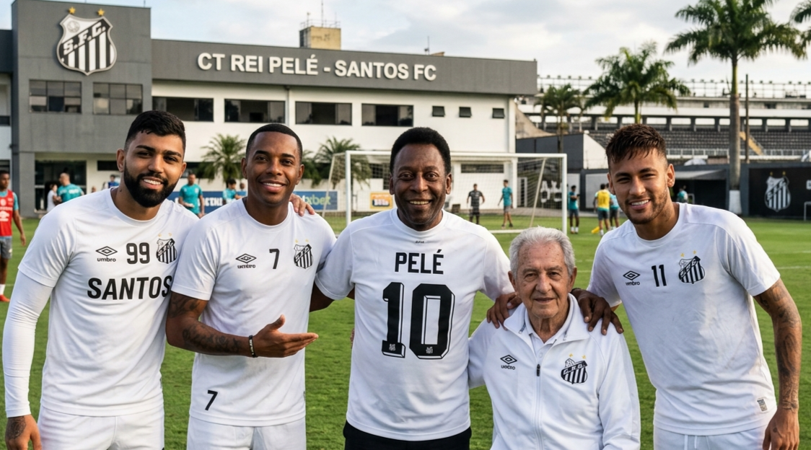

Faça parte da Nação Santista Sócio Rei
BENEFÍCIOS DO SÓCIO
- ✔ Descontos em ingressos
- ✔ Prioridade na compra
- ✔ Experiências exclusivas
Jogos Históricos
Um pedaço da história do Maior Brasileiro do Mundo
Uma coleção dos jogos mais memoráveis do Santos
Disponível no botão abaixo
Confira o SiteBRASILIDADE
O Santos sempre foi mais do que futebol. É expressão, cultura e identidade. A brasilidade do clube nasce da sua origem popular, da alegria em campo e da forma única de jogar: leve, criativa e ousada. Em 2026, o projeto Brasilidade Santista reforça essa essência, conectando o futebol com música, arte e periferia — de onde surgem os verdadeiros talentos do país. Mais do que uma coleção, é um movimento. Uma homenagem às raízes do futebol brasileiro e ao povo que faz o Santos ser gigante.
O TIME DO POVO
Da quebrada pro gramado,
do estádio diretamente pro favelado.
O Santos não é só camisa,
é voz, é luta, é verdade.
É o empoderamento black power,
é raiz, identidade.
Do mais puro futebol arte,
para a periferia pro centro da cidade.
História temos de sobra,
Conhecidos mundialmente como o time da moda,
Em 63 os italianos na roda,
Até hoje falam dessa derrota.
Enquanto um negro ousar quebrar o sistema com a bola no pé, o Santos viverá.

O Santos sempre foi mais do que um clube: é um celeiro de sonhos.
Foi na Vila que surgiram lendas que mudaram o futebol para sempre,
mostrando que talento não tem idade, origem ou limite.
Dos campos simples ao brilho mundial, os Meninos da Vila carregam
a essência do futebol arte, da ousadia e da alegria de jogar.
Aqui, cada novo talento representa uma história que começa pequena,
mas nasce pronta para conquistar o mundo.
Nascer, viver, e no Santos Morrer.